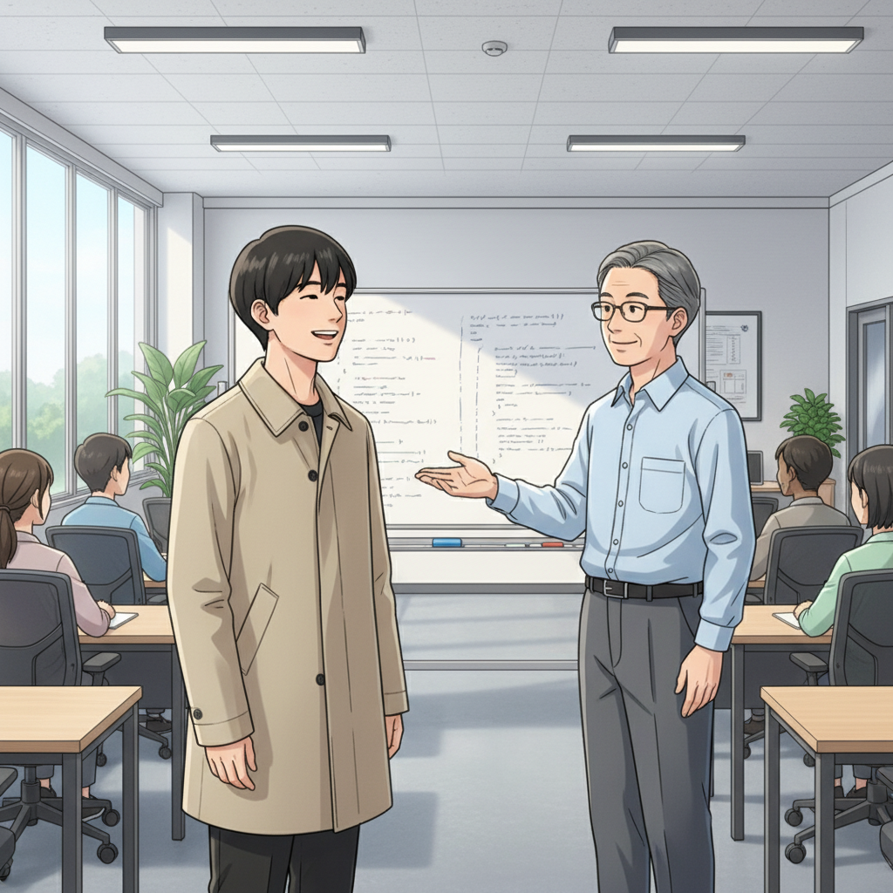
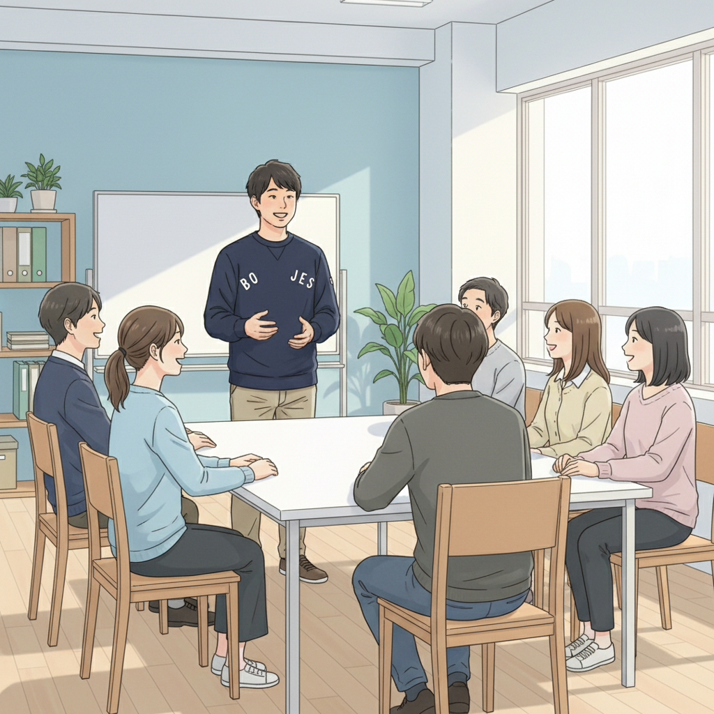

「普通」じゃなくていい！ASDの僕が見つけた起業という道 (学生起業家)
こんにちは、学生起業家です。僕は小さい頃から、周りの人とは少し違うなと感じていました。集中しすぎると周りが見えなくなったり、興味のないことには全く集中できなかったり…。いわゆるASD（自閉スペクトラム症）の特性を持っています。学校ではなかなかうまくいかず、自信をなくしていた時期もありました。
そんな僕が変わるきっかけになったのが、高校で塾頭と出会ったこと。先生は僕の特性を『才能の原石』だと言ってくれたんです。得意なこと、好きなことをとことん伸ばせばいい。そう教えてもらって、僕はプログラミングに没頭しました。そして、15歳で個人事業主として起業。今では、ICTスキルを活かして、様々な企業のサポートをしています。
最初は不安もありましたが、小さな成功体験を積み重ねることで、少しずつ自信が持てるようになりました。eスポーツ 発達障害を持つY君が才能を開花させたように、僕も自分の特性を活かして、社会に貢献できると信じています。ASD ICT 才能は、掛け合わせることで無限の可能性を秘めているんです。
塾頭との出会いが、僕の人生を変えた (学生起業家)

起業のきっかけを与えてくれた塾頭は、臨床心理士でありながらITエンジニアでもある、本当にすごい先生です。先生はマインクラフト 教育など、ICTを活用した新しい教育方法を積極的に取り入れていて、僕のような発達特性を持つ子どもたちの可能性を信じて、たくさんのチャンスをくれました。先生がいなければ、今の僕はなかったと思います。
if塾では、僕のように発達特性を持つ仲間たちがたくさんいます。お互いの得意なこと、苦手なことを理解し合い、助け合いながら成長できる環境が、僕にとって大きな支えになっています。塾長もADHDとASDの診断を受けていますが、持ち前の行動力と創造性を活かして、塾を盛り上げています。過去の自分と同じように悩んでいる子どもたちの力になりたいという熱い想いが、僕たちの原動力です。
eスポーツで才能開花！Y君の挑戦 (高崎)
if塾には、eスポーツの世界で活躍しているY君という子がいます。彼は高い集中力と空間認識能力を持ち、ゲームの世界でその才能を発揮しています。eスポーツ 発達障害を持つ彼は、その特性を武器に、数々の大会で好成績を収めています。
Y君も最初は自信がありませんでしたが、ゲームを通じて成功体験を積み重ねることで、少しずつ自信をつけていきました。今では、自分の得意なことを活かして、将来はプロのeスポーツプレイヤーとして活躍することを夢見ています。Y君のように、自分の好きなこと、得意なことを追求することで、人生を切り開いていくことができるんです。（高崎）
君だけの「好き」を、強みに変えよう (山﨑)

「自分には何もない…」そう思っている君へ。大丈夫、そんなことはありません。誰にでも、必ず何か得意なこと、好きなことがあります。それは、もしかしたら、君自身も気づいていない才能かもしれません。
if塾では、君の「好き」を見つけ、それを強みに変えるお手伝いをします。ICTスキルを身につけたり、仲間との出会いを通じて、新しい可能性を発見したり…。僕自身も、発達特性を持ちながら、自分の強みを見つけて、人生を切り開いてきました。だから、君もきっとできると信じています。（山﨑）
ASD ICT 才能を伸ばすことで、君だけの未来を切り開こう。不安な時はいつでも、if塾に相談してください。僕たちは、君の成長を全力でサポートします。